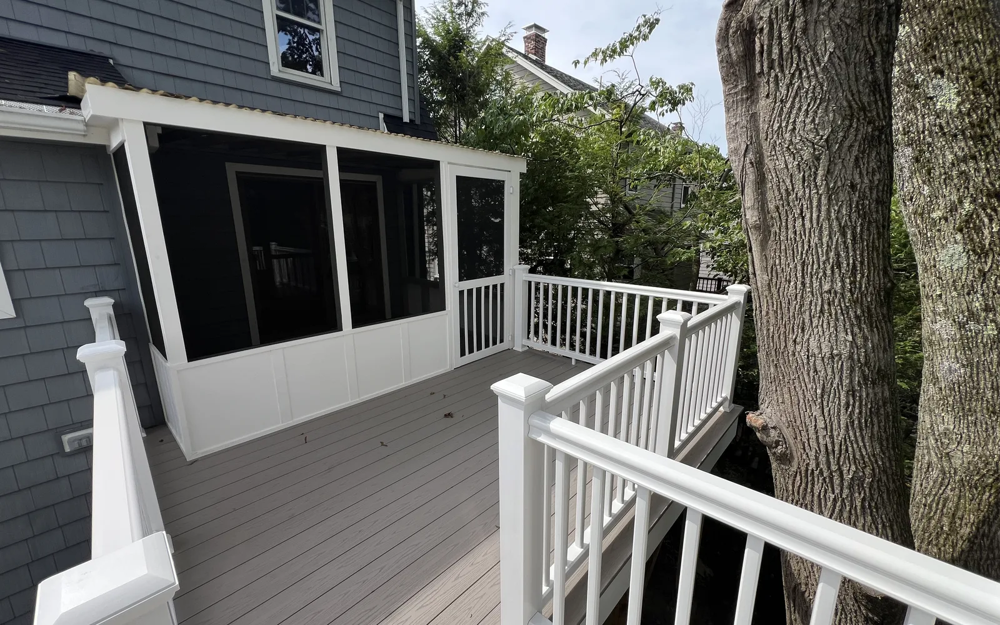

Before the work
Walkthrough, goals, constraints and estimate clarity before a commitment is made.

Deck builders in Massachusetts
Deck builders at DeFaria Construction plan the footings, framing, decking, railings and stairs together, so your deck in Essex or Middlesex County is safe, level and ready for New England winters.
Why the frame matters
Deck builders are judged by the boards on top, but a deck lasts because of the footings, framing and fasteners underneath. In Massachusetts a deck sits outside through hot summers, heavy rain and hard freezes, so the structure has to be planned before anyone talks about color.
DeFaria Construction plans structure, layout and finish together. The deck is sized for how the family will use the yard, tied correctly to the house and built to stay level for years.
Cost
Most decks DeFaria builds run about $20 to $60 per square foot, so a typical deck lands between $8,000 and $30,000. The scope sets the price, not a flat rate.
You get a fixed, itemized estimate at the walkthrough, so the price matches the real work.
Process
Every deck follows the same clear path, so you always know what happens next.
Most decks take about 1 to 3 weeks once permits are in.
Materials
Wood is the lower upfront cost. Composite asks for more at the start and much less maintenance later. We walk through both at the estimate.
When to call
What matters most
Decks and patios affect how a family uses the home outside. The project needs practical decisions around structure, layout, access, materials and the finish clients see every day.
DeFaria uses real project progress to show that outdoor work is planned, built and finished with care.
Deck types
Every yard is different, so the first conversation is about how you want to use the space, not about a catalog. These are the projects homeowners ask us for most:
Repair or replace
Not every old deck needs to come down. If the footings, posts and joists are solid, new decking, railings and stairs can give it years of life for much less than a full rebuild.
Replacement makes sense when the frame shows rot, the ledger is pulling away from the house, the footings have shifted, or the deck simply no longer fits how the family uses the yard. At the walkthrough we check the structure and tell you plainly which path makes sense, with the cost of each.
Planning
A deck that looks good on paper can still feel wrong in daily life. Before the estimate we look at:
Getting these choices right up front is what keeps a deck from feeling too small or awkward a year later.
Permits and inspections
Most new decks and deck rebuilds in Massachusetts need a building permit, and towns inspect the footings and the framing before the deck is finished. DeFaria prepares the plan, files with the local building department and schedules the inspections, so the work moves on time and passes the first time.
Footings go below the frost line so the deck does not heave in winter, and the connection to the house is built and flashed to keep water out of the wall.
Care
A little care each year keeps a deck safe and good looking:
We walk you through the care for the material you choose when the job is finished.
Why DeFaria
Call (617) 893-2221 or request an estimate with your town and a few photos of the yard.
Before and after
Each service page uses DeFaria project materials to show either the real transformation or the construction stage that makes the final result believable.


Walkthrough, goals, constraints and estimate clarity before a commitment is made.
Progress updates, organized execution and attention to the home or business around the work.
Final review, photo guidance and the next project or referral mapped while trust is high.
Estimate first
Call DeFaria Construction or request an estimate with the service, city and any photos you already have.
FAQ
Most decks DeFaria builds run about $20 to $60 per square foot, so a typical deck lands between $8,000 and $30,000 depending on size, height and materials. You get a fixed, itemized estimate at the walkthrough.
Most decks take about 1 to 3 weeks once permits are in, depending on size, height and materials.
Pressure-treated wood costs less up front. Composite costs more but needs less upkeep over the years. DeFaria helps you weigh budget, look and maintenance at the walkthrough.
Most new decks and deck rebuilds need a building permit from the town. DeFaria handles the permit with the local building department and plans footings below the frost line so the deck passes inspection.
DeFaria builds decks across Essex County and Middlesex County, including Andover, Beverly, Ipswich, Gloucester, Lynnfield, Peabody, Salem, Tewksbury, Westford, Winchester and many more. The full list of town pages is below.
Yes. DeFaria Construction is a licensed and insured contractor with an A+ BBB rating, and every project is owner-led by Luiz DeFaria.